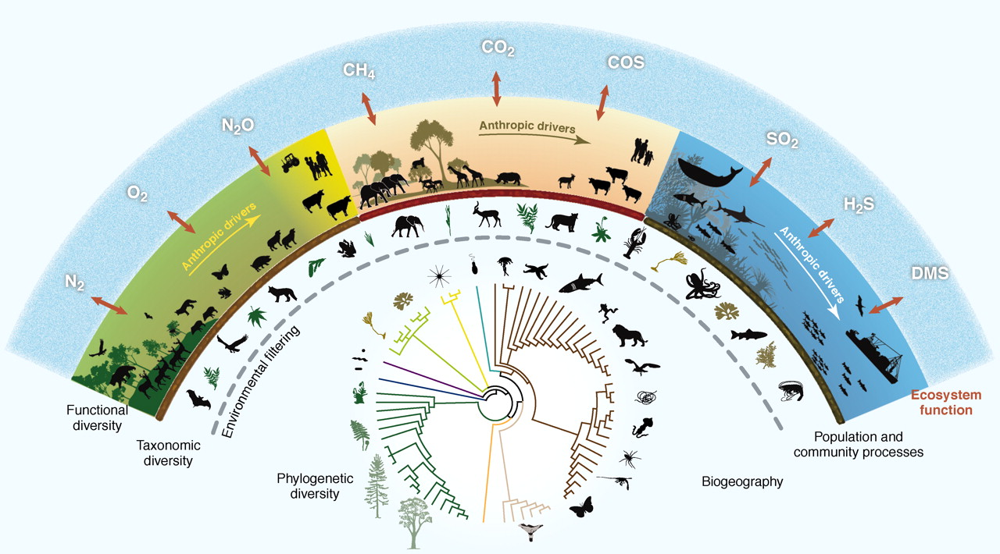
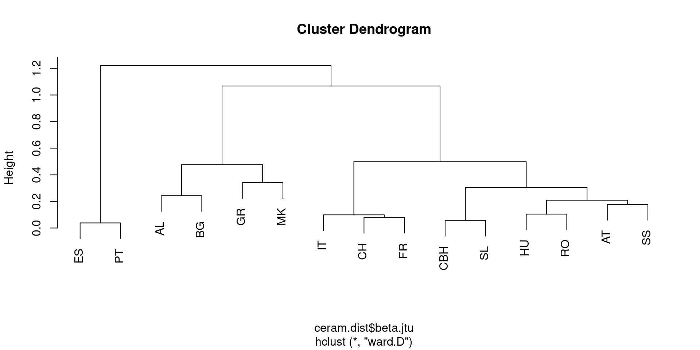
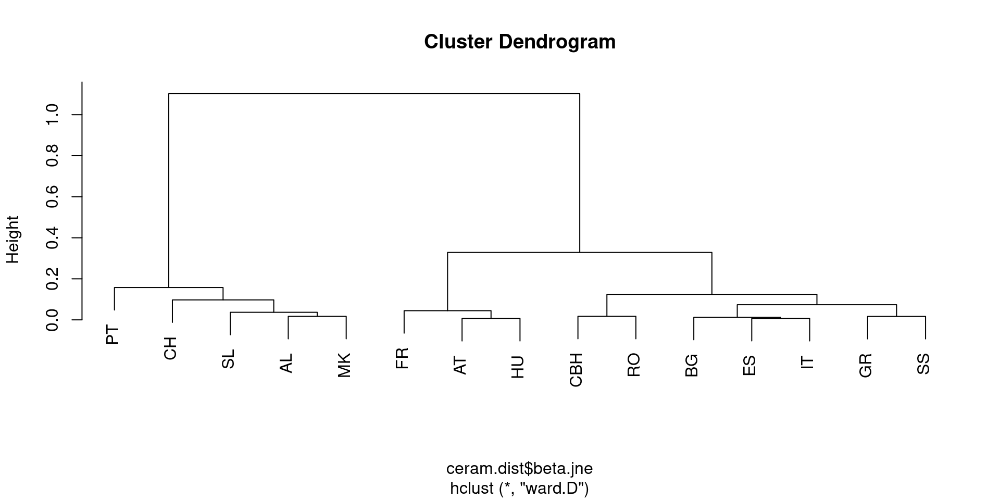
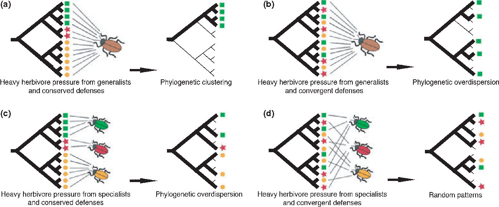

5-Biodiversity Measures
Felipe Melo
You should know today:
- Understand different measures of biodiversity
- How to combine biodiversity values into meaningful conservation information
- How to use biodiversity data for setting conservation priorities
What is biological diversity?
“The term biodiversity (from “biological diversity”) refers to the variety of life on Earth at all its levels, from genes to ecosystems, and can encompass the evolutionary, ecological, and cultural processes that sustain life”
Muldimensionality of diversity
Many dimensions of diversity

Taxonomic diversity
Diversity indexes
A quantitative measure of difference
- What can be measured as “difference”
- Types of “things”
- Quantities of each type of “thing”

Estimate diversity

How diverse are these communities?
- 7 species
- 14 individuals
What diversity informs?
Richness
Number of types (any type defined)
Evenness
How abundances are distributes across types
The scale of diversity

Alpha diversiy
By National Academy of Sciences: Robert H. Whittaker (1920—1980)

\[ \gamma = \alpha*\beta \]
- Alpha = Diversity of a local
- Beta = Difference between locals
- Gamma = Diversity of all locals
Beta diverrsity


Different meanings for “difference”


Different meanings for “difference”

betapart: an R package
$beta.jtu
AL AT BG CBH CH ES
AT 0.44878049
BG 0.24309392 0.29249012
CBH 0.25274725 0.16170213 0.32214765
CH 0.46376812 0.09852217 0.27678571 0.15311005
ES 0.46376812 0.45714286 0.58152174 0.48484848 0.37130802
FR 0.40201005 0.25101215 0.38596491 0.23754789 0.07960199 0.35714286
GR 0.30851064 0.50000000 0.42296073 0.42767296 0.48031496 0.64000000
HU 0.41000000 0.19246862 0.24899598 0.18333333 0.20465116 0.50171821
IT 0.29946524 0.16949153 0.43712575 0.18840580 0.08910891 0.49577465
MK 0.54106280 0.55502392 0.26436782 0.37634409 0.59534884 0.59534884
PT 0.63576159 0.53900709 0.49635036 0.41538462 0.53900709 0.03809524
RO 0.32631579 0.16170213 0.27659574 0.28268551 0.19626168 0.54925373
SL 0.47846890 0.18181818 0.17204301 0.05714286 0.24742268 0.39622642
SS 0.19318182 0.17721519 0.33226837 0.21428571 0.18779343 0.56842105
FR GR HU IT MK PT
AT
BG
CBH
CH
ES
FR
GR 0.51612903
HU 0.31660232 0.48611111
IT 0.09917355 0.51253482 0.26294821
MK 0.56190476 0.34065934 0.47474747 0.47474747
PT 0.37795276 0.43939394 0.52857143 0.36507937 0.72839506
RO 0.35125448 0.50000000 0.10434783 0.32989691 0.41884817 0.51798561
SL 0.17204301 0.41121495 0.19148936 0.05714286 0.54807692 0.58904110
SS 0.27715356 0.54452926 0.14468085 0.35692308 0.36756757 0.42748092
RO SL
AT
BG
CBH
CH
ES
FR
GR
HU
IT
MK
PT
RO
SL 0.14207650
SS 0.20000000 0.16216216
$beta.jne
AL AT BG CBH CH ES
AT 0.119921802
BG 0.272807137 0.106838740
CBH 0.249084249 0.105955865 0.024130666
CH 0.075650971 0.091743319 0.168419765 0.181476418
ES 0.189356884 0.090476190 0.012145807 0.032196970 0.157172996
FR 0.157249209 0.040175594 0.060237619 0.054267054 0.143087086 0.083850932
GR 0.297549968 0.113941019 0.062214477 0.079102112 0.155044155 0.024335664
HU 0.134401544 0.006701505 0.110593057 0.096078431 0.082848837 0.077991932
IT 0.256466963 0.147581645 0.009933075 0.047089083 0.244224422 0.007003130
MK 0.017076733 0.105560018 0.284927959 0.216638370 0.066129762 0.145722591
PT 0.098537928 0.205087396 0.269751330 0.310247154 0.179607626 0.593291623
RO 0.206530926 0.086389475 0.043404255 0.017314488 0.152223166 0.035911104
SL 0.026076555 0.161529458 0.272000311 0.295798319 0.079766260 0.196130273
SS 0.338171317 0.187605657 0.049388434 0.089511754 0.246847096 0.015335293
FR GR HU IT MK PT
AT
BG
CBH
CH
ES
FR
GR 0.090170180
HU 0.030261152 0.114967056
IT 0.119464439 0.042172560 0.120385126
MK 0.119756138 0.297894876 0.132799695 0.194042334
PT 0.311023622 0.336363636 0.212605042 0.359058566 0.062081129
RO 0.028882506 0.075916230 0.087809037 0.051055474 0.188925684 0.241871019
SL 0.201940729 0.223567655 0.164442842 0.336239496 0.037826161 0.129268763
SS 0.125323222 0.016745248 0.191952812 0.035518784 0.266807432 0.333665581
RO SL
AT
BG
CBH
CH
ES
FR
GR
HU
IT
MK
PT
RO
SL 0.244642247
SS 0.109904153 0.322887672
$beta.jac
AL AT BG CBH CH ES FR
AT 0.5687023
BG 0.5159011 0.3993289
CBH 0.5018315 0.2676580 0.3462783
CH 0.5394191 0.1902655 0.4452055 0.3345865
ES 0.6531250 0.5476190 0.5936675 0.5170455 0.5284810
FR 0.5592593 0.2911877 0.4462025 0.2918149 0.2226891 0.4409938
GR 0.6060606 0.6139410 0.4851752 0.5067751 0.6353591 0.6643357 0.6062992
HU 0.5444015 0.1991701 0.3595890 0.2794118 0.2875000 0.5797101 0.3468635
IT 0.5559322 0.3170732 0.4470588 0.2354949 0.3333333 0.5027778 0.2186380
MK 0.5581395 0.6605839 0.5492958 0.5929825 0.6614786 0.7410714 0.6816609
PT 0.7342995 0.7440945 0.7661017 0.7256318 0.7186147 0.6313869 0.6889764
RO 0.5328467 0.2480916 0.3200000 0.3000000 0.3484848 0.5851648 0.3801370
SL 0.5045455 0.3433476 0.4440433 0.3529412 0.3271889 0.5923567 0.3739837
SS 0.5313531 0.3648208 0.3816568 0.3037975 0.4346405 0.5837563 0.4024768
GR HU IT MK PT RO SL
AT
BG
CBH
CH
ES
FR
GR
HU 0.6010782
IT 0.5547074 0.3833333
MK 0.6385542 0.6075472 0.6687898
PT 0.7757576 0.7411765 0.7241379 0.7904762
RO 0.5759162 0.1921569 0.3809524 0.6077739 0.7598566
SL 0.6347826 0.3559322 0.3933824 0.5859031 0.7183099 0.3867188
SS 0.5612745 0.3366337 0.3924419 0.6343750 0.7611465 0.3099042 0.4850498

Applications for conservation

SLOSS Debate

Beta diversity of plants

Biotic homogenization

Phylogenetic diversity
Basic definition

Relationships with gradients

Phylo and Functional diversity
Functional diversity
Function is key

Calculate it… not that easy

Calculate it… not that easy

Biodiversity~Function

Applications for conservation

Applications for conservation

Today’s review
- Diversity is much more than number of species
- Important to understand: alpha, beta and gamma
- Phylogeny is evolutive history
- Functional divesity is key for modern interpretation on the value fo biodiversity